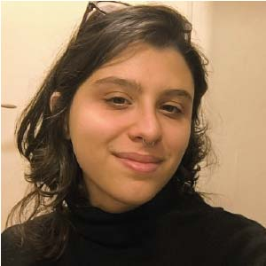
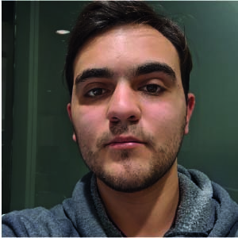

¿Qué hacemos?
Introducción.
Miembros

María Elena Buemi
Investigadora de la UBA.

Daniel Acevedo
Investigador del CONICET.

Pablo Negri
Investigador del CONICET.

Manuel Dubinsky
Rol

Nicolas Mastropasqua
Rol

Julieta Goria
ROL.

Juan Ignacio Bustos Gorostegui
ROL.
Nicolas Carrasco
ROL.
Últimos proyectos
Event-based facial microexpression analysis using Spiking Neural Networks
Conferencia: 2025 15th IEEE International Conference on Pattern Recognition Systems (ICPRS)
Microexpression analysis plays a key role in many applications such as those in Human-Robot Interaction and Driving Monitoring Systems (DMS). However, robust and fast detection of subtle facial micro-movements in-the-wild still remains a significant challenge for standard RGB cameras. Recently, bio-inspired sensors such as event cameras have emerged as a promising alternative due to their high temporal resolution, low latency and energy efficiency. Despite their potential, the public availability of event-based datasets focusing on facial analysis is still scarce. To address this limitation, we introduce a preliminary multi-resolution and multi-modal (event-based and RGB) microexpression dataset labelled according to the Facial Action Unit Coding System and recorded under mixed lighting conditions. Additionally, this paper explores the use of Spiking Neural Networks to detect these microexpressions and to perform facial recognition using the event data.
Viabilidad de búsqueda de parentesco en Problema Inverso Familiar
Revista: JAIIO, Jornadas Argentinas de Informática.
El reconocimiento familiar a partir de imágenes faciales es una tarea desafiante que amplía la verificación facial tradicional al incorporar variaciones genéticas y generacionales. Mientras que los enfoques existentes, como los explorados en el desafío Recognizing Families In the Wild (RFIW), se centran en verificar relaciones familiares en una dirección temporal lineal (comparando mayormente padres con hijos jóvenes), nuestra investigación aborda un problema inverso: la identificación de hijos mediante la comparación de adultos con versiones más jóvenes de sus padres. El objetivo de este trabajo es determinar si esta formulación inversa constituye un problema distinto al reconocimiento de parentesco tradicional o si puede resolverse con los mismos enfoques. Para ello, utilizamos ArcFace [Deng et al., 2019] para la alineación de rostros y extracción de embeddings faciales. Desarrollamos además un conjunto de datos que refleja esta inversión temporal, basado en imágenes extraídas del sitio MDb (Internet Movie Database). Evaluamos el comportamiento del modelo comparando las distribuciones de similitud del coseno en ambos datasets: el tradicional (FIW) y el nuevo dataset inverso.
Precipitación integrada satelital: combinación de productos, temperatura de brillo infrarroja y actividad eléctrica mediante redes neuronales convolucionales
Revista: JAIIO, Jornadas Argentinas de Informática.
El monitoreo de la precipitación es sumamente crucial para la actividad agropecuaria, ya que es un componente fundamental del balance hidrológico que tiene un gran impacto en los rindes. Las observaciones in-situ a través de pluviómetros son escasas, por lo cual se complementa con estimaciones de precipitación provenientes de sensores remotos (i.e. satélites y radares meteorológicos) que incrementan la cobertura espacial y temporal. En este trabajo se propone utilizar un modelo de redes neuronales convolucionales con una arquitectura de tipo UNet a partir de datos provistos por el satélite GOES-16. En particular, se evaluará el uso combinado de temperatura de brillo en infrarrojo (que brinda información de la temperatura del tope de las nubes) y la actividad eléctrica (que brinda información sobre la intensidad de la convección). El entrenamiento del modelo se realiza utilizando datos de precipitación estimada por el radar meteorológico a bordo del satélite GPM.
Enhancing precipitation detection: A multi-sensor approach using conditional GANs and recurrent networks
Revista: Pattern Recognition Letters.
The advent of automatic precipitation detection with high-frequency data at very low spatial resolution (4 km) renders the satellite infrared brightness temperature (IR-BT) sensor a promising variable. Nevertheless, this approach must confront the inherent simplicity of this variable, where there is not always a strong correlation with convective precipitation, and the very low number of rain events occurring in nature, presenting an imbalanced problem. This paper proposes a novel approach to identify rainfall that integrates the IR-BT variable with lightning activity, defined as the number of detected lightning flashes per unit of time and space. The approach utilizes a recurrent neural network to estimate a binary output and a conditional GAN (cGAN) framework, which enhances the training and performance of this imbalanced problem. Inverse Dice loss, an alternative loss function, is employed to enhance the convergence and results of our framework: PD-GAN. Tests have shown that integrating sensors and the proposed architecture leads to positive outcomes, including a reduction in false alarms and an enhancement in the overlap of positive events.
Combined use of radiomics and artificial neural networks for the three-dimensional automatic segmentation of glioblastoma multiforme
Revista: JAIIO, Jornadas Argentinas de Informática
Glioblastoma multiforme (GBM) is the most prevalent and agressive primary brain tumour that has the worst prognosis in adults. Currently, the automatic segmentation of this kind of tumour is being intensively studied. Here, the automatic three-dimensional segmentation of the GBM is achieved with its related subzones (active tumour, inner necrosis, and peripheral oedema). Preliminary segmentations were first defined based on the four basic magnetic resonance imaging modalities and classic image processing methods (multithreshold Otsu, Chan–Vese active contours, and morphological erosion). After an automatic gap-filling post processing step, these preliminary segmentations were combined and corrected by a supervised artificial neural network of multilayer perceptron type with a hidden layer of 80 neurons, fed by 30 selected radiomic features of gray intensity and texture. Network classification has an overall accuracy of 83.9%, while the complete combined algorithm achieves average Dice similarity coefficients of 89.3%, 80.7%, 79.7%, and 66.4% for the entire region of interest, active tumour, oedema, and necrosis segmentations, respectively. These values are in the range of the best reported in the present bibliography, but even with better Hausdorff distances and lower computational costs. Results presented here evidence that it is possible to achieve the automatic segmentation of this kind of tumour by traditional radiomics. This has relevant clinical potential at the time of diagnosis, precision radiotherapy planning, or post-treatment response evaluation.
Clasificación automática de tipos polínicos apícolas
Revista: JAIIO, Jornadas Argentinas de Informática
Este trabajo evalúa la eficacia de clasificación automática de tipos polínicos apícolas mediante redes neuronales convolucionales. Utilizando muestras de diez especies de plantas apícolas de Buenos Aires (Argentina) se prepararon y fotografiaron especímenes polínicos hidratados sin acetolizar bajo microscopio óptico con un aumento mediano (10× lente objetivo). Se desarrolló un algoritmo de segmentación para extraer imágenes individuales de granos de polen, generando dos conjuntos de datos independientes. Los resultados preliminares con la red ResNet18 sin acetólisis muestran una precisión del 90% para imágenes en escala de grises versus 63% para imágenes en color. Esta investigación busca optimizar la identificación automática del origen floral de mieles bonaerenses utilizando equipamiento de baja complejidad.
Exploring spatial-temporal dynamics in event-based facial micro-expression analysis
Conferencia: Proceedings of the IEEE/CVF International Conference on Computer Vision
Micro-expression analysis has applications in domains such as Human-Robot Interaction and Driver Monitoring Systems. Accurately capturing subtle and fast facial movements remains difficult when relying solely on RGB cameras, due to limitations in temporal resolution and sensitivity to motion blur. Event cameras offer an alternative, with microsecond-level precision, high dynamic range, and low latency. However, public datasets featuring event-based recordings of Action Units are still scarce. In this work, we introduce a novel, preliminary multi-resolution and multi-modal micro-expression dataset recorded with synchronized RGB and event cameras under variable lighting conditions. Two baseline tasks are evaluated to explore the spatial-temporal dynamics of micro-expressions: Action Unit classification using Spiking Neural Networks (51.23% accuracy with events vs. 23.12% with RGB), and frame reconstruction using Conditional Variational Autoencoders, achieving SSIM= 0.8513 and PSNR= 26.89 dB with high-resolution event input. These promising results show that event-based data can be used for micro-expression recognition and frame reconstruction.
Facial Expression Recognition using lightweight deep convolutional networks with Label Distribution Learning on Action Units labels space
Revista: Electronic Journal of SADIO
Nowadays, the search for ‘lightweight’ solutions that achieve comparable results to those of heavy deep learning models has received increasing attention due to a feasible implementation on mobile devices. One of the areas that might benefit from this approach is the task of Facial Expression Recognition (FER). Considering the fact that datasets usually come with categoric labeling but most emotions occur as combinations, mixtures, or compounds of the basic emotions, we make use of label distribution learning (LDL) as a training strategy. In this article we deal with the FER problem using lightweight neuronal networks and LDL. We further assume that facial images should have similar emotion distributions to their neighbors when the right auxiliary task is considered, like the Action Unit Recognition problem. This neighbors’ distribution information is captured in the loss function to help the LDL training process. Specifically, we conduct an analysis of EfficientFace, a state-of-the-art ligthweight CNN and we analyze the impact of using different approaches to LDL on a variety of in-the-wild datasets: RAF-DB, CAER-S, FER+ and AffectNet.
Manipulación de expresiones faciales vía espacio latente de Red Generativa Antagónica (GAN)
Conferencia: Simposio Argentino de Imágenes y Visión (SAIV 2022)-JAIIO 51 (Modalidad virtual y presencial (UAI), octubre 2022)
StyleGAN destaca como la arquitectura de vanguardia en generación de rostros sintéticos altamente realistas. Su implementación proyecta una imagen en su espacio latente, el cual es posible de manipular por medio de curvas direccionales modificando rasgos de la imagen original. Sin embargo, su alta dimensionalidad provoca que la búsqueda manual de una direccionalidad que produzca un rasgo o gesto dado resulte impracticable. Este trabajo propone una arquitectura neuronal de tipo pseudo-autoencoder que manipula la proyección latente alternando la apariencia del rostro. Esto se realiza gracias a la codificación del gesto facial con los vectores de Action Units. Se consiguió una dinámica de expresiones que permite la transición de un gesto a otro sin necesidad de pasar por el neutral, mejorando la naturalidad de la dinámica gestual.
Últimas novedades
Charla
En cursoParticipantes: nombres
Lugar: ubicación
Fecha: agregar fecha
Breve descripción.
Charla
FinalizadoParticipantes: nombres
Lugar: ubicación
Fecha: agregar fecha
Breve descripción.